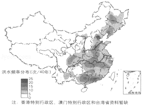
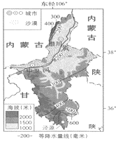

2018年北京市中考地理真题 · 选择题 第16、17、18、19、20题
“独立寒秋，湘江北去，橘子洲头……”（选自毛泽东《沁园春﹒长沙》）描写的是岳麓山周边的景观。如图为利用手机软件查找到的岳麓山周边电子地图及据此绘制的局部地区简图。读图，完成14～16题。
16.运用该电子地图可以改变（ ）
A.比例尺大小B.橘子洲头的地理位置
C.图幅的大小D.岳麓山山峰的海拔

洪水是因大雨、暴雨或持续性降雨等原因导致河湖水位上涨而泛滥的现象。如图为中国洪水频率分布图（1949﹣1989年）。读图，完成17～19题。17.我国洪水频率（ ）
A.西北地区最高
B.东部高，西部低
C.黄河和长江上游地区较高
D.北方地区比南方地区高
18.洪水在我国（ ）
A.人口稀疏区出现频率高B.影响范围小、危害低
C.对畜牧业生产没有影响D.对粮食生产影响严重
-------------在--------------------此--------------------卷--------------------上--------------------答--------------------题--------------------无--------------------效------------
19.洪水与降水之间的关系是（ ）A.降水多的地区每年都发洪水B.降水少的地区不会发洪水
C.洪水多发区降水量大且集中D.降水年际变化大的地区不会发洪水
毕业学校_____________ 姓名_____________ 准考证号_____________ ____________________________________________________

硒砂瓜富含硒，个儿大汁儿甜，是宁夏中卫地区的特色农产品之一。如图为宁夏回族自治区简图。读图，完成20，21题。20.宁夏回族自治区（ ）
A.地处热带
B.行政中心是银川
C.西邻陕西省
D.境内黄河向西流